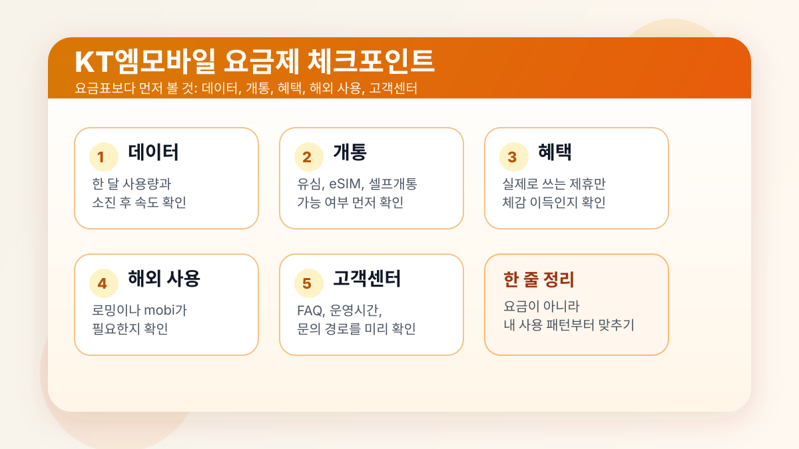

최근 KT엠모바일 취약계층 전용 요금제 이슈가 다시 보이면서 관심이 커졌습니다. 다만 세부 혜택은 공식 상세 페이지에서 다시 확인하는 편이 안전합니다. 이 글은 최신 이슈를 훅으로만 쓰고, KT엠모바일을 고를 때 실제로 먼저 봐야 할 기준에 집중합니다.
공식 홍보관을 보면 KT엠모바일은 2026년 1월 14일 가입자 190만 명 달성, 2026년 2월 5일 키즈·시니어 요금제 혜택 강화, 2025년 12월 29일 eSIM 데이터 로밍 mobi 론칭, 2025년 12월 2일 5대 생활 혜택 제휴 요금제 50만 명 돌파처럼 생활 혜택과 개통 편의성을 같이 밀고 있습니다. 그래서 단순히 "싼 알뜰폰"인지보다 내 데이터 사용량과 개통 방식, 실제 쓸 혜택이 맞는지를 먼저 보는 편이 맞습니다.

KT엠모바일을 볼 때 먼저 비교할 기준
알뜰폰은 브랜드명보다 내 사용 패턴에 맞는 조합이 중요합니다. 월 요금이 낮아도 데이터가 부족하면 불편하고, 혜택이 많아도 내가 안 쓰면 의미가 없습니다. 비교 순서는 단순합니다. 데이터, 통화, 문자, 개통 방식, 실제 혜택, 사후관리 순으로 보면 됩니다.
- 한 달 데이터 사용량과 소진 후 속도
- 통화와 문자 사용량
- eSIM 지원 여부와 셀프개통 편의성
- 해외 사용이나 로밍 필요 여부
- 제휴 혜택이 실제 생활패턴과 맞는지
가격과 혜택은 요금제 비교 페이지에서 먼저 확인
요금은 공식 요금제 소개와 요금제 비교 페이지에서 확인하는 것이 가장 안전합니다. 여기서 가격, 데이터, 통화, 문자, 제휴 혜택을 같은 화면에서 비교할 수 있기 때문입니다.
체감상 중요한 건 단순 최저가가 아닙니다. 내가 실제로 쓰는 구간에서 데이터가 얼마나 버티는지, 소진 후 속도가 생활에 불편하지 않은지, 그리고 제휴 혜택이 정말 자주 쓰는 브랜드인지가 더 중요합니다. 월 요금이 조금 높아도 사용 패턴에 맞으면 오히려 덜 손해입니다.
이런 사람은 이렇게 보면 됩니다
요금이 가장 중요한 경우
최저가만 보지 말고 기본 데이터와 소진 후 속도를 같이 보세요. 메신저와 웹서핑 위주인지, 영상과 스트리밍이 많은지에 따라 체감이 크게 달라집니다. 공식 요금제 비교 페이지에서 가격 필터를 먼저 걸고, 그다음 데이터와 통화량을 맞추는 순서가 효율적입니다.
가족 회선이나 부모님 회선을 보는 경우
공식 홍보관에 키즈·시니어 관련 안내가 보인다면, 이런 회선은 할인 폭보다 설명하기 쉬운 구조와 관리 편의성이 중요합니다. 자동이체, 고객센터 접근, 요금 고지 확인 방식을 먼저 보세요. 부모님 회선은 혜택보다 개통 이후 관리가 쉬운지가 더 중요할 때가 많습니다.
해외 사용이 있는 경우
eSIM 로밍 서비스 mobi처럼 해외 사용 옵션이 있다는 점은 장점일 수 있습니다. 공식 홍보관에는 약 70개국 사용, 출국 전 개통 체크, 실시간 충전 같은 안내가 함께 보입니다. 다만 자주 해외에 나가는 사람이 아니라면 로밍보다는 국내 데이터 조건이 더 중요할 수 있으니 우선순위를 나눠서 보세요.
혜택형 요금제가 끌리는 경우
생활 혜택 제휴 요금제는 분명 매력적이지만, 제휴 수가 많다고 무조건 유리한 건 아닙니다. 내가 자주 쓰는 편의점, 쇼핑, 콘텐츠 서비스가 실제로 포함돼 있는지 먼저 확인해야 합니다. 2025년 12월 2일 공식 홍보관의 5대 생활 혜택 제휴 요금제 50만 명 돌파 안내처럼, 많은 사람이 선택한 상품이라도 내 생활에 맞는지는 별도로 봐야 합니다.
가입 전에 공식으로 확인할 것
KT엠모바일 FAQ와 고객센터 안내에서는 고객 혜택 서비스, 셀프개통, 고객센터 이용 경로를 확인할 수 있습니다. 그래서 가입 전에 꼭 볼 것은 요금표만이 아니라 가입 후 관리가 쉬운지입니다.
- 셀프개통이 가능한 단말인지 확인
- 유심과 eSIM 중 어떤 방식이 맞는지 확인
- 고객 혜택 서비스와 제휴 혜택 사용처 확인
- 문의가 필요할 때 고객센터 경로와 운영시간 확인
- 취약계층 전용 요금제는 공식 상세 페이지에서 조건과 혜택 재확인
한 번에 요약하면
KT엠모바일을 고를 때는 최신 뉴스 제목보다 데이터 조건, 개통 방식, 제휴 사용처, 고객센터 접근성을 먼저 봐야 실패가 적습니다. 특히 취약계층 전용 요금제처럼 관심이 큰 상품일수록, 공식 상세 페이지와 요금제 비교 페이지를 함께 보고 판단하는 것이 가장 안전합니다.
자주 묻는 질문
Q. KT엠모바일은 어떤 사람에게 잘 맞나요?
통신비를 줄이면서도 생활 혜택이나 셀프개통 편의성을 같이 보고 싶은 사용자에게 잘 맞습니다. 특히 요금제 소개와 비교 페이지를 직접 볼 시간이 있는 사용자에게 더 잘 맞습니다.
Q. 제휴 혜택형 요금제는 무조건 이득인가요?
아닙니다. 본인이 실제로 자주 쓰는 서비스가 포함돼 있을 때만 체감 이득이 커집니다.
Q. 취약계층 전용 요금제는 바로 가입해도 될까요?
기사 제목만으로 판단하지 말고, 공식 상세 페이지와 FAQ에서 대상 조건과 실제 혜택, 개통 방식까지 먼저 확인한 뒤 비교하는 편이 안전합니다.